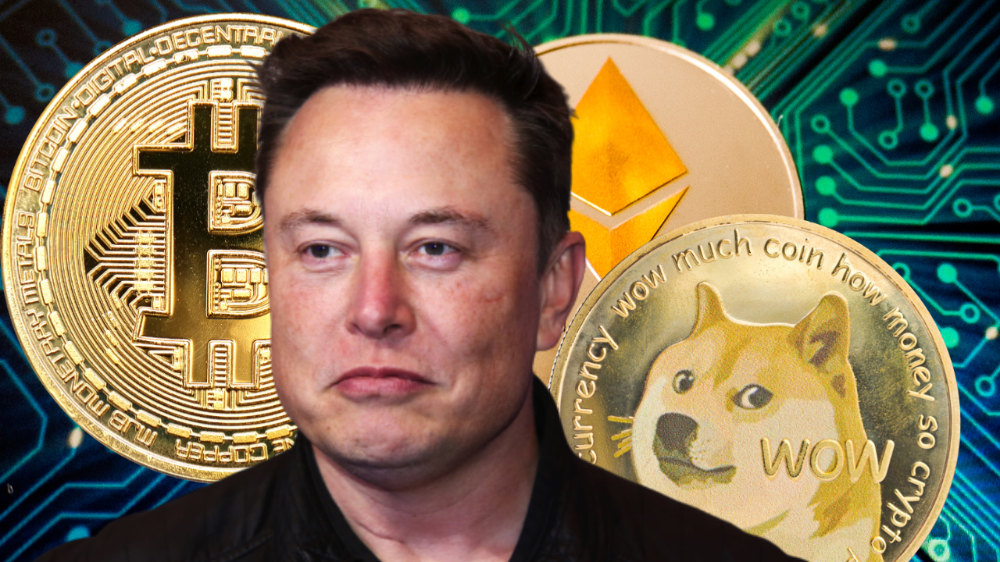
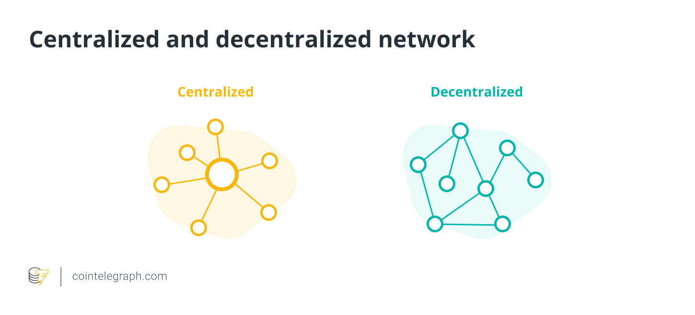

What is cryptocurrency?
Cryptocurrency 101
Cryptocurrency — also known as crypto — is a digital currency designed to work as a medium of exchange. It uses cryptography to secure and verify transactions, as well as to control the creation of new units of a particular digital currency.
Many cryptocurrencies are built on blockchain technology, which is a distributed ledger enforced by a distributed network of computers. Cryptocurrencies are distinguished from fiat currencies like the United States dollar or the British pound because any central authority does not issue them, making them potentially impervious to government intervention or manipulation.
This article will discuss various concepts of a cryptocurrency to help you understand the novel financial innovation.
How does cryptocurrency work?
The majority of cryptocurrencies function without the backing of a central bank or government. Instead of relying on government guarantees, decentralized technology called blockchain underpins the operation of cryptocurrencies. Cryptocurrencies do not exist as a stack of notes or coins. Instead, they live only on the internet. Consider them virtual tokens, the value of which is decided by market forces created by those seeking to purchase or sell them. Cryptocurrency is formed through a process known as mining, which entails employing computer processing power to solve complex mathematical problems to earn coins. Users can also purchase the currencies from brokers, which they can then store and spend using encrypted wallets.
Blockchains typically function via proof-of-work (PoW) or proof-of-stake (PoS) consensus algorithms. PoW operates based on miners who often designate specific computing machines for the process. PoS, on the other hand, runs on staking. In the staking system, rewards are distributed to help run the network by holding assets in certain designated wallets. A number of PoS assets also allow for masternodes — a more complicated staking process that usually requires a certain minimum number of coins.
Why are cryptocurrencies so popular?
Cryptocurrencies appeal to their supporters for a variety of reasons. Here are some of the most popular:
- Supporters see cryptocurrencies such as bitcoin as the currency of the future and are racing to buy them now, presumably before they become more valuable;
- Some supporters like the fact that cryptocurrency removes central banks from managing the money supply, since over time these banks tend to reduce the value of money via inflation;
- Other supporters like the technology behind cryptocurrencies, the blockchain, because it’s a decentralized processing and recording system and can be more secure than traditional payment systems;
- Some speculators like cryptocurrencies because they’re going up in value and have no interest in the currencies’ long-term acceptance as a way to move money.